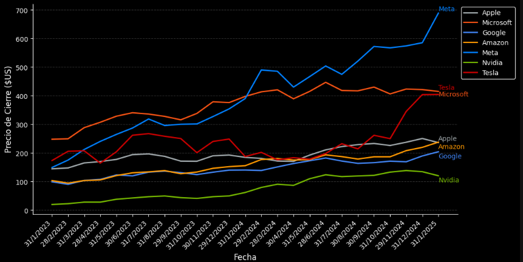
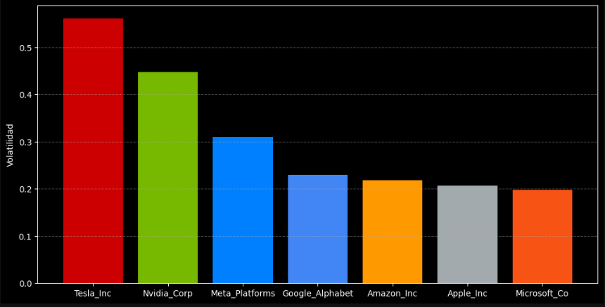
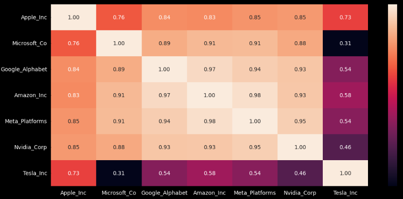
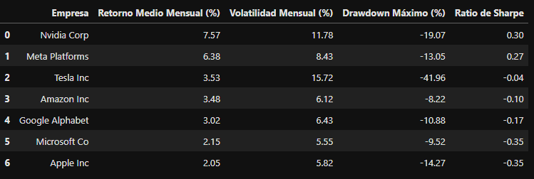
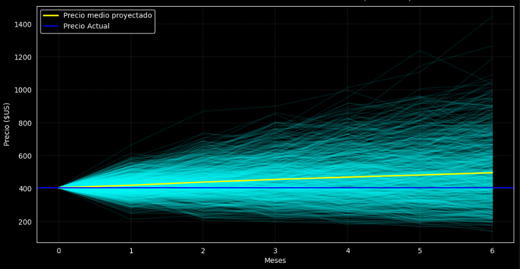
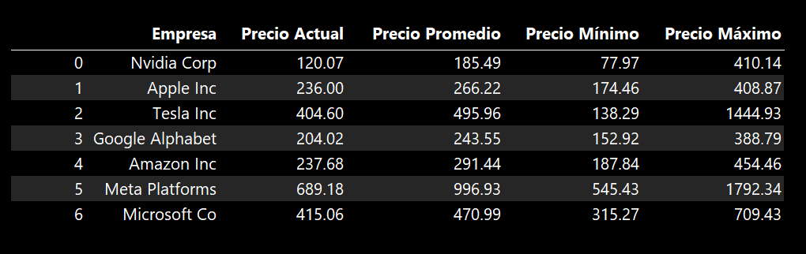

Análisis de cotizaciones en Bolsa Empresas tecnológicas desde 2023 a 2025.
Resumen Ejecutivo
Este informe presenta un análisis exploratorio y descriptivo de la evolución de los precios de cierre mensuales de siete de las principales empresas del sector tecnológico a nivel mundial: Apple Inc, Microsoft Corp, Google (Alphabet Inc), Amazon Inc, Meta Inc(Facebook), Nvidia Corp y Tesla Inc, durante el período comprendido entre enero de 2023 y enero de 2025.
La metodología se basó en herramientas de análisis de datos en Python, incluyendo Pandas, NumPy, Matplotlib y Seaborn, y en datos obtenidos mediante la API de Alpha Vantage. El estudio no solo examinó el comportamiento histórico de los precios, sino que también incluyó el cálculo de métricas clave como retorno, volatilidad y riesgo, además de la aplicación de simulaciones Monte Carlo para proyectar posibles escenarios futuros.
El objetivo principal de este análisis es ofrecer insights útiles para la toma de decisiones de inversión, proporcionando una visión comparativa de la relación riesgo-retorno entre las distintas compañías analizadas.
Problema y Objetivos
El Problema
Las acciones de empresas tecnológicas suelen tener alta volatilidad, lo cual genera incertidumbre para los inversionistas que buscan maximizar rendimientos y minimizar riesgos. Es necesario entender cómo se comportan estos activos en el tiempo, su nivel de riesgo, y cuáles ofrecen una mejor relación riesgo-retorno.
Objetivos
- Analizar el comportamiento histórico de los precios de cierre de las principales tecnológicas.
- Evaluar el rendimiento y la volatilidad de cada acción.
- Determinar la correlación entre activos.
- Simular trayectorias futuras mediante un modelo Monte Carlo.
- Identificar oportunidades de inversión basadas en métricas de riesgo-retorno.
Datos y Metodología
Los datos utilizados en este análisis provienen de la API de Alpha Vantage e incluyen los precios de cierre ajustados en frecuencia mensual para el período comprendido entre enero de 2023 y enero de 2025. El estudio se centró en siete de las principales empresas tecnológicas: Apple, Microsoft, Google (Alphabet), Amazon, Meta (Facebook), Nvidia y Tesla.
Proceso de Análisis
- Extracción de datos usando la API y limpieza para estandarizar series temporales
- Análisis exploratorio (EDA) con estadísticas descriptivas, visualización de distribuciones y correlaciones.
- Cálculo de retornos mensuales, volatilidad anualizada, coeficiente de variación y drawdowns.
- Evaluación de rendimiento mediante el ratio de Sharpe para comparar riesgo-retorno.
- Simulación Monte Carlo con trayectorias aleatorias para visualizar posibles escenarios futuros
Herramientas Utilizadas
Hallazgos Clave y Visualizaciones
A continuación, se destacan algunos de los resultados más relevantes del análisis:
- Tendencia de precios: La mayoría de las empresas representadas en el gráfico, como Microsoft, Google, Amazon, Meta y Nvidia, muestran una tendencia alcista en los precios de sus acciones desde principios de 2023 hasta principios de 2025. Esto sugiere un período generalmente favorable para el sector tecnológico en el mercado bursátil.
Precios de las Acciones por empresa del 2023 al 2025

- Liderazgo de Crecimiento al Final del Período: Meta y Microsoft se perfilan como las que experimentan los crecimientos más pronunciados hacia el final del período analizado. Meta, en particular, alcanza el precio de acción más alto en el gráfico al inicio de 2025.
- Crecimiento Constante pero a Diferentes Niveles: Empresas como Apple y Nvidia también exhiben un crecimiento, aunque a ritmos y niveles de precios diferentes en comparación con las de mayor crecimiento como Microsoft y Meta. Apple mantiene un precio relativamente estable con una tendencia al alza, mientras que Nvidia muestra un crecimiento acelerado en 2024 tras un inicio más lento.
Volatilidad Anualizada de las Acciones del 2023 al 2025

- Volatilidad: Es una medida de la dispersión de los retornos de un instrumento financiero, indicando qué tan rápido y en qué medida cambia su precio. Una alta volatilidad implica mayor riesgo y potencial de ganancias o pérdidas.
- Volatilidad: Tesla y Nvidia presentaron los niveles de volatilidad más altos, mientras que Microsoft y Apple mostraron mayor estabilidad.
Matríz de Correlación

-
Correlación: Mide la relación estadística entre los movimientos de dos variables. En el contexto financiero, indica cómo se mueven los precios de dos activos entre sí.
Tipos de Correlación:- Correlación Positiva (+1): Los precios se mueven en la misma dirección. Si uno sube, el otro tiende a subir.
- Correlación Negativa (-1): Los precios se mueven en direcciones opuestas. Si uno sube, el otro tiende a bajar.
- Correlación Nula (0): No hay relación aparente entre sus movimientos.
Importancia: La correlación es fundamental para la diversificación de carteras. Activos con baja o negativa correlación pueden reducir el riesgo general de una cartera.
- Correlación: Alta correlación entre Apple, Microsoft y Google, lo que sugiere un comportamiento sincronizado. Sin embargo, Tesla muestra patrones más independientes.
- Aunque todas las empresas analizadas pertenecen al sector tecnológico, se observan diferencias en la correlación de sus precios debido a sus distintos modelos de negocio y exposición al riesgo. Apple, Microsoft y Google muestran una alta correlación, lo que sugiere un comportamiento sincronizado influenciado por factores macroeconómicos comunes, capitalización bursátil elevada, ingresos recurrentes y percepción de estabilidad por parte de los inversionistas institucionales.
-
En contraste, Tesla presenta patrones más independientes:
- Tesla aunque considerada tecnológica, opera principalmente como fabricante automotriz, con fuerte dependencia de la cadena de suministro, regulaciones ambientales y decisiones corporativas particulares. Además, su volatilidad se ve amplificada por la figura mediática de su CEO, Elon Musk, cuyas declaraciones públicas y acciones suelen generar movimientos significativos en el mercado.
Tabla de resumen

- Durante ciertos meses del período analizado, Tesla y Nvidia experimentaron caídas máximas (drawdowns) más pronunciadas en sus precios de cierre. Estas caídas reflejan una mayor sensibilidad a eventos adversos del mercado y una recuperación más lenta en comparación con otras empresas del sector.
- Al evaluar el rendimiento ajustado por riesgo, Nvidia y Meta destacaron con los mejores ratios de Sharpe, combinando retornos consistentes con volatilidad. En contraste, Microsoft y Apple presentaron los ratios más bajos, indicando que a pesar posibles altos retornos, estuvieron acompañados de una mayor inestabilidad en sus precios.
Simulación Monte Carlo
En esta sección, se realiza una simulación de Monte Carlo para proyectar los posibles precios futuros de las acciones de las principales empresas tecnológicas analizadas. Este método permite modelar múltiples posibles trayectorias de precios al incorporar el rendimiento histórico y los factores de riesgo asociados.
Variables Utilizadas:
- Precio de cierre mensual: Precio final registrado para cada mes en el período analizado (2023-2025).
- Retorno medio mensual (%): Promedio de los retornos mensuales históricos, que indica la rentabilidad esperada.
- Volatilidad mensual (%): Medida de la variabilidad de los precios, que refleja la magnitud de los cambios en el tiempo.
Período de proyección: 6 meses, para estimar los posibles precios al cierre del semestre siguiente.Número de simulaciones: 1000 trayectorias, para capturar una amplia gama de escenarios posibles.
Simulación Monte Carlo - Precio de Tesla Inc (6 meses)

Resumen de Simulaciones Monte Carlo

En la simulación de Monte Carlo las trayectorias generadas mostraron una alta dispersión en empresas con mayor volatilidad, como Tesla, Nvidia y Meta, reflejando la incertidumbre asociada a su comportamiento futuro. Mientras que Apple y Google presentaron proyecciones más estables, lo que sugiere una mayor previsibilidad en sus precios bajo los supuestos del modelo.
Conclusiones y Recomendaciones
Conclusiones Clave
-
NVIDIA y Meta lideran en rendimiento ajustado por riesgo:
- Ambas empresas presentaron los mejores ratios de Sharpe del grupo (0.30 y 0.27, respectivamente), lo que indica que lograron un buen equilibrio entre retorno y volatilidad. Sin embargo, su desempeño estuvo acompañado de una alta variabilidad en los precios, lo cual representa un mayor riesgo para inversionistas conservadores.
-
Tesla muestra alta rentabilidad bruta, pero con riesgo extremo:
- Aunque Tesla tuvo un retorno promedio aceptable (3.53%), se vio afectada por una volatilidad mensual del 15.72% y un drawdown máximo del -41.96%, el más severo entre las empresas analizadas. Su ratio de Sharpe negativo (-0.04) sugiere que el riesgo superó al rendimiento obtenido.
-
Microsoft y Apple ofrecen estabilidad, pero con bajo rendimiento relativo:
- Estas empresas presentaron las menores volatilidades (5.55 % y 5.82 %) y una proyección más estable en la simulación de Monte Carlo. Sin embargo, sus retornos mensuales fueron modestos y sus ratios de Sharpe negativos, indicando que su nivel de riesgo no fue debidamente compensado por los rendimientos durante el periodo.
-
Amazon y Google mantienen un perfil intermedio:
- Ambas compañías se ubicaron en posiciones medias tanto en retorno como en volatilidad. Sin embargo, sus ratios de Sharpe también fueron negativos, lo que sugiere una relación riesgo-retorno menos eficiente en comparación con NVIDIA y Meta.
-
Tendencias Temporales y Correlaciones:
- Apple, Microsoft y Google mostraron alta correlación, posiblemente por la estabilidad y madurez de sus modelos de negocio. En contraste, Tesla y Nvidia fueron menos correlacionadas, reflejando una mayor dependencia de factores específicos, como innovación, liderazgo y ciclos de mercado.
Recomendaciones
-
Para inversionistas conservadores, Microsoft y Apple ofrecen los perfiles más estables:
- Con la menor volatilidad histórica y proyecciones más predecibles en la simulación (por ejemplo, Microsoft entre $315 y $709, Apple entre $174 y $408), estas empresas son adecuadas para portafolios que buscan crecimiento moderado y menor exposición a shocks del mercado.
-
Para perfiles más agresivos, Meta y Tesla presentan alto potencial de retorno:
- A pesar de su alta volatilidad y caídas significativas en el pasado, ambas compañías mostraron un fuerte potencial alcista en las simulaciones. Meta podría alcanzar hasta $1,792, y Tesla más de $1,440. Estas oportunidades deben ser consideradas con precaución, debido al riesgo elevado asociado.
-
Nvidia representa un balance atractivo entre riesgo y retorno:
- Con el retorno mensual promedio más alto (7.57%) y un rango proyectado amplio (de $77 a $410), Nvidia se presenta como una opción interesante para inversionistas dispuestos a asumir variaciones de precio a cambio de mayores rendimientos potenciales.
-
Amazon y Google ofrecen oportunidades equilibradas:
- Ambas empresas mostraron un crecimiento proyectado moderado (Amazon entre $237 y $454; Google entre $204 y $388), lo que las convierte en opciones intermedias para portafolios que buscan diversificación entre estabilidad y crecimiento.
Regular monitoring and dynamic portfolio allocation are essential:
- Dada la volatilidad observada y la dispersión en las proyecciones de precios, es necesario revisar periódicamente las posiciones y ajustar las asignaciones del portafolio según las condiciones del mercado, el desempeño de las acciones y la evolución de los fundamentos del negocio.